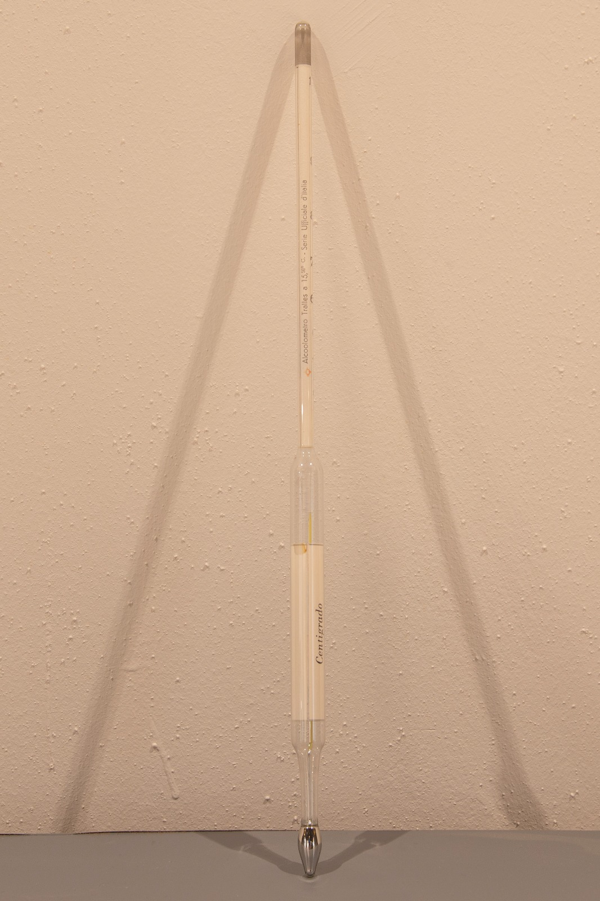
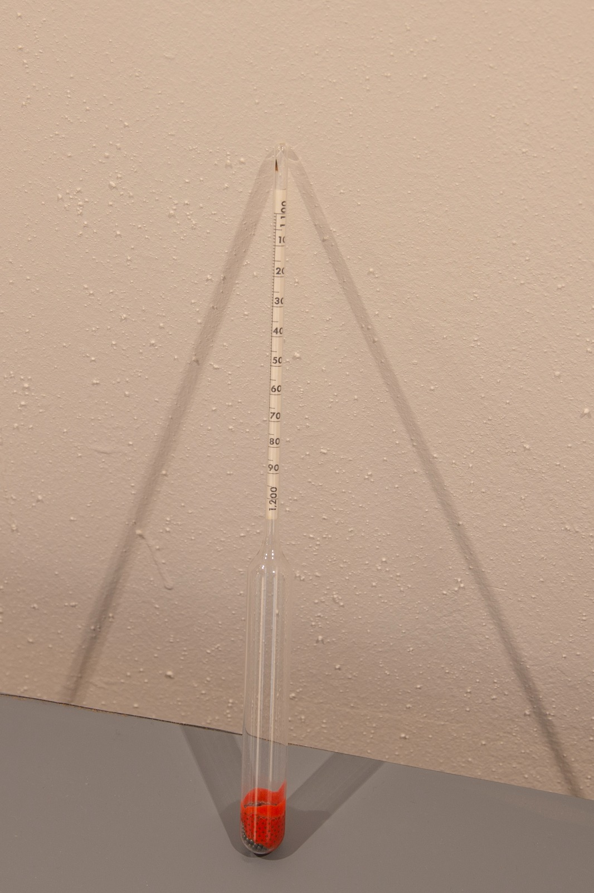
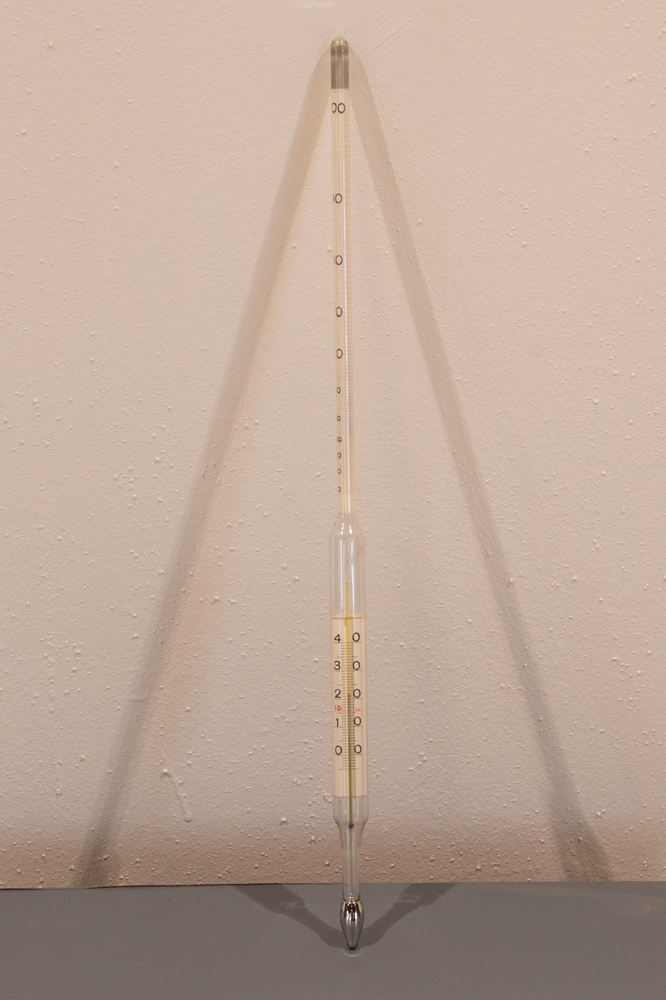

Densimetro con mercurio



Scuola di provenienza: Istituto agrario ""F. De Sanctis", Avellino
Settore: Meccanica
Costruttori: Sconosciuto
Materiali: Vetro e mercurio
Accessori: Nessuno
Stato di conservazione: Buono
Descrizione: L’alcolometro è uno strumento che serve a misurare la quantità percentuale di alcol etilico presente nei distillati. Riempito un cilindro graduato con la quantità di liquido del quale volete misurare la gradazione, dopo essersi assicurati che l'alcolometro sia pulito, immergerlo lentamente nel liquido. La lettura si effettua sulla scala graduata del termometro (tra i 15° e i 56°C).